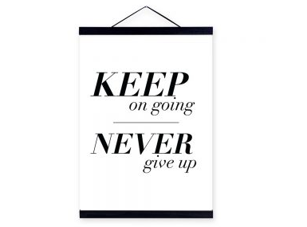
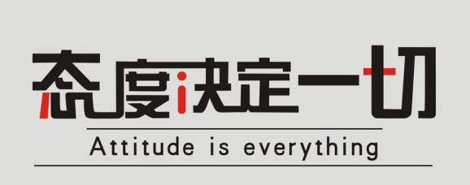

Time: 19:30-21:30, Friday, 18 Nov.
Venue: Room B221, New Main Building, Beihang University
TABLE TOPIC
Movie
Toastmaster - gastby
Table Topic Master - Britney
I think britney must be shocked by one movie recently, and have you ever been touched by a special film ? what story will happened between you and your movie? join us and share us your most particular experiences.
COMPETENT COMMUNICATION
Don't be trapped and don't be afraid (CC 5)
Speaker - John

Maybe you once lost your direction or you got some failures in your life road,
but you still need pack some positive inspirits in your bags, keep up and carry on, this time john will share his story with us about this, let's wait and see what will he bring to us~~
Attitude Matters (CC 10)
Speaker - Sarah

Even through no more information is given, I can still tell this will be a motivation speech. As a female technician, Sarah has some unique view aspects of life. This time she might be able to prick your idleness and pessimism. If you need energy, the oil here is free!
What is Toastmasters?
Toastmasters International (TI) is a non-profit educational organization that operates clubs worldwide for thepurpose of helping members improve their communication, public speaking, and leadership skills.

https://mp.weixin.qq.com/s/1m_9lVHxsLZEq0zAGi2qYg
本页为抢救式本地归档，图文已永久保存。